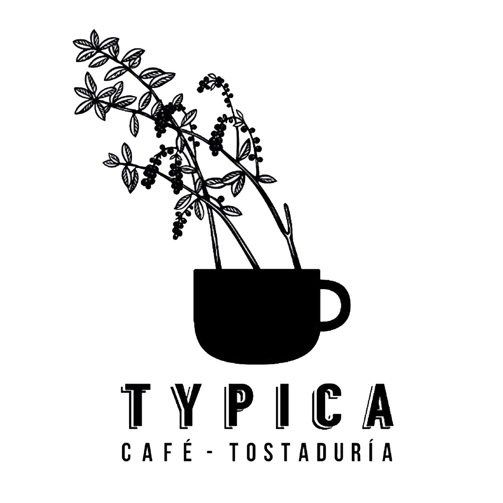
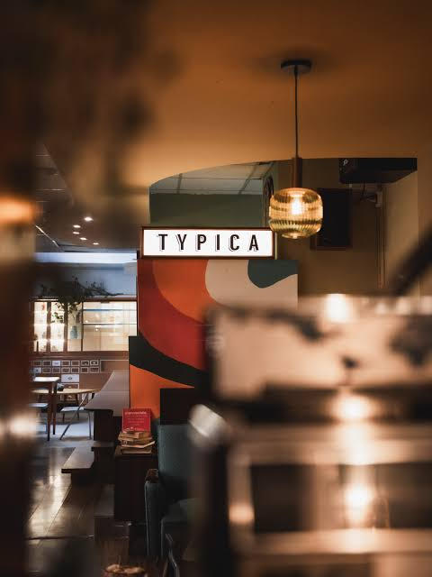
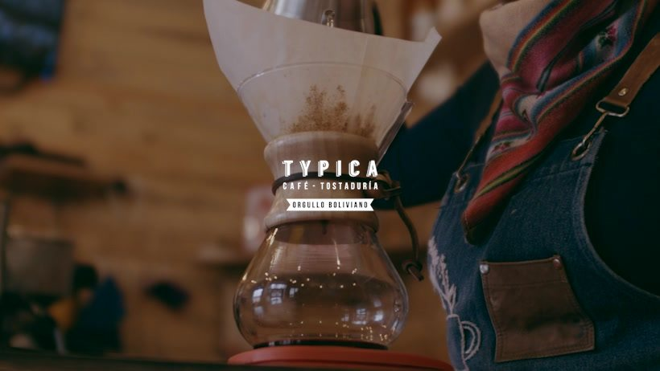
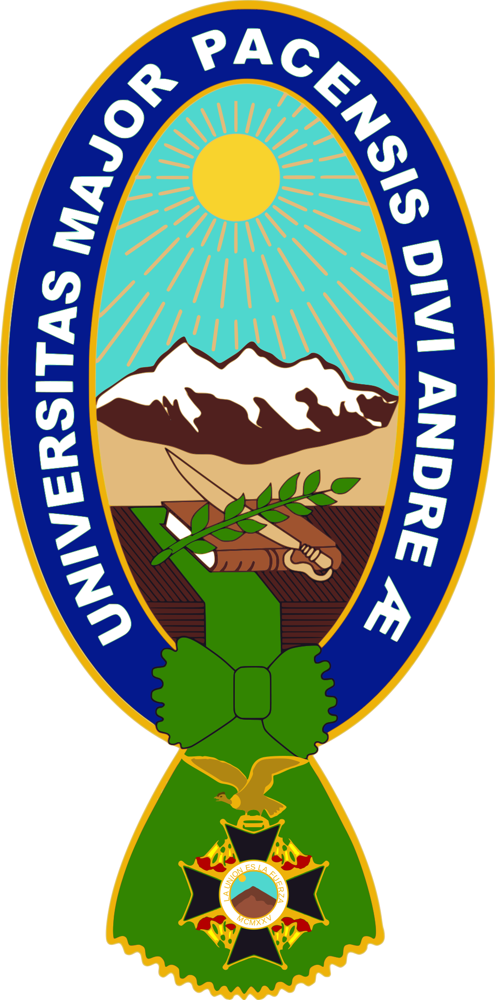
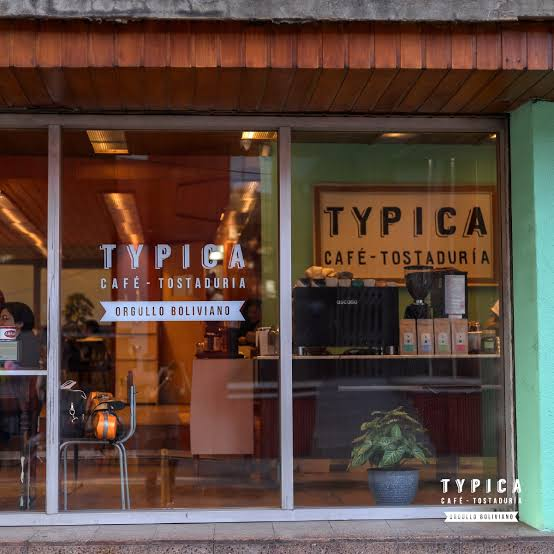

Typica Café — ADOO Descargar Informe

UMSA · Informática · ADOO 2026
Análisis y diseño de un sistema integral de gestión de comandas, estaciones de producción y control de insumos para la operativa de Typica Café en la ciudad de La Paz.

Universidad Mayor01 · Introducción
El presente proyecto se enfoca en el análisis y diseño de un sistema informático especializado para Typica Café, una reconocida cadena de cafeterías de especialidad y tostaduría en la ciudad de La Paz. Typica Café se distingue por revalorizar casonas patrimoniales y brindar una experiencia gastronómica centrada en el café de altura boliviano y la repostería artesanal.
Dada la alta demanda y la complejidad operativa del servicio en salón y barra, resulta indispensable contar con un sistema integral de gestión de comandas, derivación automatizada a estaciones de producción (barra de especialidad y cocina) y control en tiempo real de insumos perecederos.
Este estudio aborda el desarrollo de la solución bajo el paradigma del Análisis Estructurado y el Análisis y Diseño Orientado a Objetos (UML), asegurando una propuesta técnica rigurosa y escalable.

02 · Antecedentes
Typica Café cuenta con una sólida presencia en La Paz a través de sus sucursales en Sopocachi, el Centro Histórico, San Jorge y la Zona Sur.
La atención a los comensales involucra un flujo constante de órdenes que deben ser tomadas en mesa, clasificadas y transmitidas a las diferentes áreas de elaboración de forma inmediata.
La sincronización entre personal de salón (meseros), baristas, cocineros y encargado de almacén presenta cuellos de botella por la falta de un flujo digitalizado de comandas.
La transmisión manual de pedidos genera extravíos de tickets, demoras en las estaciones de preparación y descuadres en el inventario de insumos clave — granos de café, leches y repostería.
03 · Planteamiento
Se identifican tres falencias principales en la operativa diaria de Typica Café que afectan la eficiencia del servicio.
Extravío o retraso en el envío de comandas desde las mesas hacia las áreas de preparación, causando confusión en el orden de llegada de las órdenes.
Inexistencia de un canal digital estructurado que enrute automáticamente los ítems de bebidas a la barra de baristas y los de comida/repostería a la cocina.
Ausencia de una deducción automatizada de materia prima en almacén según las preparaciones despachadas, imposibilitando el seguimiento del stock en tiempo real.
Árbol de Problemas
Formulación del Problema
"¿De qué manera el análisis y diseño estructurado y orientado a objetos de un Sistema de Gestión de Comandas, Estaciones de Producción y Control de Insumos puede optimizar el flujo de trabajo operativo, la coordinación entre áreas y el seguimiento de stock en Typica Café en la ciudad de La Paz?"
04 · Objetivos
Analizar y diseñar un sistema informático de Gestión de Comandas, Estaciones de Producción y Control de Insumos para optimizar el ciclo de atención, la preparación de pedidos y el control de stock en Typica Café (La Paz), aplicando formalmente los paradigmas del Análisis Estructurado y el Análisis y Diseño Orientado a Objetos (UML).
05 · Alcance y Justificación
Aplica exclusivamente a la gestión operativa de Typica Café en la ciudad de La Paz, Bolivia — Gestión 2026.
Módulo de Gestión de Comandas (toma y despacho) · Módulo de Estaciones de Producción (Barra y Cocina) · Módulo de Control de Insumos e Inventarios.
La automatización del envío de comandas agiliza los tiempos de preparación, reduce errores en pedidos y previene desabastecimientos y mermas sin registrar.
06 · Metodología
Investigación aplicada de carácter descriptivo e instrumental apoyada en fundamentos de ingeniería de software. El desarrollo sigue el ciclo de vida de análisis estructurado y orientado a objetos.
07 · Análisis Estructurado
Modelado estructurado del flujo de comandas, derivación a estaciones de producción y control de insumos. Usa las pestañas para navegar entre niveles.
Módulos Diseñados
Toma y despacho de pedidos desde mesa hacia las estaciones de producción con registro digital en tiempo real.
Pantallas digitales independientes para la Barra de Baristas y la Cocina, con colas de pedidos ordenadas por prioridad.
Deducción automatizada de materia prima en almacén según las preparaciones despachadas, con alertas de stock mínimo.
08 · Análisis Orientado a Objetos
Modelado orientado a objetos del sistema: Casos de Uso, Clases, Secuencia y Actividades representando la interacción entre mesa, cocina, barra y almacén.
09 · Planificación
Diagrama de Gantt con las fases del proyecto académico.
| Fase / Tarea | Octubre 2026 | Noviembre 2026 | Diciembre 2026 | Entregable |
|---|---|---|---|---|
| Fase 1 Generalidades y Sitio Web |
27–29 Oct (Borrador) | — | 01–07 Dic (Final) | Blog / Sitio Web publicado |
| Fase 2 Análisis Estructurado (DFDs) |
27–29 Oct (Borrador) | — | 01–07 Dic (Final) | Diagramas DFD y Diccionario |
| Fase 3 Análisis Orientado a Objetos |
27–29 Oct (Borrador) | — | 01–07 Dic (Final) | Diagramas UML completos |
| Fase 4 Consolidación y Formato impreso |
— | — | 01–07 Dic | Documento Word/PDF final |
| Fase 5 Entrega y Defensa Final |
— | — | 08–12 Dic | Defensa del Proyecto |
10 · Equipo